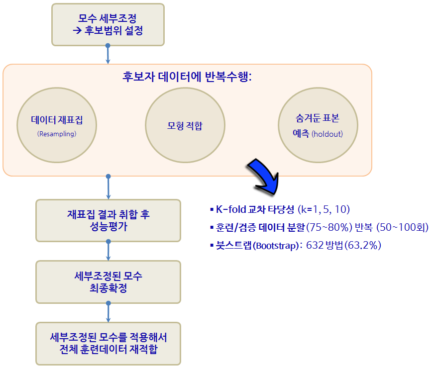
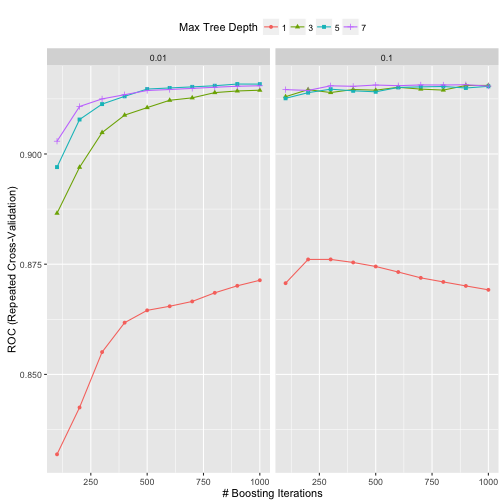

xwMOOC 기계학습
데이터 적합 모형 개발
학습목표
- 전통적 통계모형과 비교하여 예측모형에 대해 이해한다.
- 예측모형을 R에서 직접 실행한다.
caret팩키지의 10년에 걸친 여정을 살펴본다.
1. 전통적 통계모형과 예측모형 비교
예측모형(Predictive Model)은 정확도가 높은 모형을 개발하는 과정이다. 따라서, 전통적 통계학에서 강조하는 추론, 타당성, 유의성, 가정과 같은 개념적인 것보다는 “실질적으로 정확하게 예측을 할 수 있는가?” 라는 문제늘 더 중요하게 다루고 있다.
예측모형에서 중요하게 고려되는 사항
- 예측모형 성능
- 예측의 단순성
- 복잡성과 컴퓨팅 비용을 줄이도록 변수(특성, Feature) 축소
- 예측수식 평활(smoothness)
- 예측모형의 강건성

2. caret 팩키지
caret 팩키지와 같은 예측모형 전용 팩키지가 필요한 이유는 너무나 많은 예측모형이 존재하고, 더 큰 문제는 사용법과 해석이 모두 다르다는데 있다. 너무 많은 사람이들이 오랜기간에 걸쳐 개발하다보니 어쩌면 당연한 문제라고 볼 수도 있다.
2.1. R 팩키지 구문
기계학습에서 가장 많이 작업하는 것 중에 하나가 분류문제에 대한 예측 알고리즘을 제시하는 것이다. 데이터도 다양하지만, 분류문제에 대한 다양한 이론이 존재하고, R로 구현된 팩키지도 정말 다양한다. 예를 들어, lda는 판별분석(Linear Discrimant Analsyis)을 돌릴 때 사용되는 것으로 MASS 팩키지에 포함되어 있고, 훈련데이터 혹은 검증데이터에 예측값을 구할 경우 predict 함수에 lda 반환값을 넣어주면 되고 추가설정은 필요없다. glm은 일반화 선형모형을 적합할 때 특히 링크함수로 logit을 넣어 설정하고 stats 팩키지에 포함되어 있고, 구문은 lda와 확연한 차이를 볼 수 있다. gbm, mda, rpart, Weka, LogitBoost등 다양한 예측 알고리즘이 존재한다. 다음은 Max Kuhn 박사가 caret을 개발한 주요한 사유로 정리한 표다. 이를 일관된 인터페이스로 제공하고 나아가 각 모형의 성능을 객관적으로 비교할 수 있는 성능평가 지표 도출 및 확정을 위해서 꼭 필요한 것으로 판단된다. (본인이 필요해서 개발하지 않았을까 생각되고, 누구나 이런 코드는 갖고 있는데 체계적으로 정리해서 공개한 후, 10년에 걸쳐 시간을 투여한 Kuhn 박사님께 감사드립니다.)
| 예측함수명 | 팩키지명 | predict 함수 예측구문 |
|---|---|---|
| lda | MASS | predict(obj) (추가 인자설정 불필요) |
| glm | stats | predict(obj, type = “response”) |
| gbm | gbm | predict(obj, type = “response”, n.trees) |
| mda | mda | predict(obj, type = “posterior”) |
| rpart | rpart | predict(obj, type = “prob”) |
| Weka | RWeka | predict(obj, type = “probability”) |
| LogitBoost | caTools | predict(obj, type = “raw”, nIter) |
2.2. 기계학습 알고리듬 1
컴퓨터 기계가 학습을 하는 것은 흥미로운 주제로 5가지 패러다임으로 페드로 박사님께서 범주화하셨습니다.
- 기호주의자(symbolist) : 역추론(inverse deduction) → 전문가 시스템(Expert System)
- 연결주의자(connectionist) : 역전파(backpropagation) → 신경망/딥러닝
- 진화론자(evolutionist) : 유전자 프로그래밍(genetic programming) → 유전자 알고리듬(Genetic Programming)
- 베이즈(Bayesian) : 베이즈 추론(Bayesian inference) → 깁스 표집, MCMC
- 유사주의자(analogizer) : 통계적 학습(Statistical Learning) → 지지도 벡터 머신(Support vector machine)
caret에서 지원하는 예측모형 목록 중 일부는 다음과 같고, 전체 목록은 예측모형 caret 목록을 참조한다. 2014년 2월 기준 예측모형과 예측함수 147개, 2016년 1월 기준 216개 폭증.
| 모형 | 예측함수명 | 팩키지 | 세부조정 모수 |
|---|---|---|---|
| 재귀적 분할 | rpart | rpart | maxdepth |
| Boosted trees | gbm | gbm | interaction.depth, n.trees, shrinkage |
| Random forests | rf | randomForest | mtry |
| 신경망 | nnet | nnet | decay, size |
| Support Vector Machine (RBF 커널) | svmRadial | kernlab | sigma, C |
| Support Vector Machine (다항식 커널) | svmPoly | kernlab | scale, degree, C |
| 선형회귀 | lm | stats | 없음 |
| … | … | … | … |
3. 고객 이탈 예측 사례
고객 이탈(churn)은 마케팅을 통한 고객획득과 마찬가지로 상당히 중요한 의미를 갖는다. 고객이탈을 고객유지(retention)의 반대쪽 면으로 볼 수 있고, 고객평생가치적인 측면에서도 상당히 중요한 사업적 의미를 갖는다. SGI, Silicon Graphics International에도 상당히 좋은 데이터를 많이 제공하고 있다. churn.all, churn.data, churn.names, churn.test데이터를 활용하여 직접 예측모형을 개발한다.
3.1. 고객이탈 데이터 준비
C50 팩키지에 churn 데이터로 준비되어 있어, 굳이 웹사이트에서 다운로드 받아 이를 가공하는 과정을 생략할 수 있다. data(churn) 명령어를 수행하면 ls() 명령어를 통해서 churnTest, churnTrain 데이터프레임이 생성된 것을 확인하게 된다.
suppressMessages(library(pROC))
suppressMessages(library(C50))
data(churn)
ls()[1] "churnTest" "churnTrain" "hook_in" "hook_out"
suppressMessages(library(doMC))
registerDoMC(cores=7)
suppressMessages(library(caret))3.2. 기계학습 훈련-검증 데이터 쪼개기
churnTest, churnTrain 데이터프레임을 allData로 결합한다. 그리고 나서, 훈련데이터와 검증데이터를 75:25 비율로 나눈다. caret 팩키지에 데이터를 쪼개는 다양한 방법을 제공하고 있어, createFolds, createMultiFolds, createResamples 함수를 필요에 따라 사용한다.
# 데이터 나누기
allData <- rbind(churnTrain, churnTest)
inTrainingSet <- createDataPartition(allData$churn, p = .75, list = FALSE)
churnTrain <- allData[ inTrainingSet,]
churnTest <- allData[-inTrainingSet,]
# 설명변수만 추출
predictors <- names(churnTrain)[names(churnTrain) != "churn"]3.3. 부스팅 나무 모수 세부조정
부스팅(Boosted Tree) 모형을 caret에 적용하기 전에 먼저 이탈여부(“yes”, “no”)를 재코딩해야된다. 왜냐면, gbm에서 종속변수를 요인 자료형을 받지 않기 때문이다. trainControl에 twoClassSummary를 지정하면, 민감도(Sensitivity), 특이성(specificity), AUC 면적을 함께 확인하고, 제어에 활용할 수 있다.
최고성능을 내는 모수를 찾기 위해서 expand.grid에 gbm관련 설정을 한다. shrinkage는 0.01과 0.1로 설정하고, n.trees 나무갯수는 100에서 1000까지 100만큼 증가시켜 10회 반복한다. interaction.depth는 나무노드를 쪼개는 회수를 지정한다. 따라서, 나무 깊이가 1,3,5,7로 깊어지고 나무가 풍성해진다.
metric = "ROC" 모수 설정을 통해 최적 모수가 ROC 면적이 가장 큰 것이 교차타당도 결과 자동 선정된다.
## 종속변수(이탈여부, "yes", "no") 재코딩
forGBM <- churnTrain
forGBM$churn <- ifelse(forGBM$churn == "yes", 1, 0)
suppressMessages(library(gbm))
ctrl <- trainControl(method = "repeatedcv", repeats = 5,
classProbs = TRUE,
summaryFunction = twoClassSummary)
grid <- expand.grid(interaction.depth = seq(1, 7, by = 2),
n.trees = seq(100, 1000, by = 100),
shrinkage = c(0.01, 0.1),
n.minobsinnode = 10)
gbmTune <- train(churn ~ ., data = churnTrain,
method = "gbm",
metric = "ROC",
tuneGrid = grid,
verbose = FALSE,
trControl = ctrl)Loading required package: plyr
3.4. 최종 모형 성능평가 및 검증데이터 예측
나무깊이, shrinkage, 노드 최소 훈련표본 갯수를 기반으로 ROC 면적이 교차타당도 결과로 산출되고 가장 좋은 것을 선정한다.
gbmTune 결과를 바탕으로 confusionMatrix에 넣어 모형 성능을 가늠한다.
검증데이터(향후, 신규 예측이 필요한 데이터)에 고객이탈 확률과 고객보유확률을 predict 함수로 예측한다.
# 최적모수 선정 시각화
ggplot(gbmTune) + theme(legend.position = "top")
# 최적 모형 성능 평가
gbmPred <- predict(gbmTune, churnTest)
confusionMatrix(gbmPred, churnTest$churn)Confusion Matrix and Statistics
Reference
Prediction yes no
yes 124 6
no 52 1067
Accuracy : 0.9536
95% CI : (0.9404, 0.9646)
No Information Rate : 0.8591
P-Value [Acc > NIR] : < 2.2e-16
Kappa : 0.7847
Mcnemar's Test P-Value : 3.446e-09
Sensitivity : 0.70455
Specificity : 0.99441
Pos Pred Value : 0.95385
Neg Pred Value : 0.95353
Prevalence : 0.14091
Detection Rate : 0.09928
Detection Prevalence : 0.10408
Balanced Accuracy : 0.84948
'Positive' Class : yes
# 검증데이터 고객이탈 확률과 고객보유확률 예측
gbmProbs <- predict(gbmTune, churnTest, type = "prob")
head(gbmProbs) yes no
1 0.03023747 0.9697625
2 0.05412460 0.9458754
3 0.67664526 0.3233547
4 0.68258206 0.3174179
5 0.97999220 0.0200078
6 0.03178743 0.9682126
3.5. pROC 팩키지 ROC 곡선
pROC 팩키지 ROC 곡선을 통해 민감도와 특이성에 대한 자세한 정보를 확인할 수 있다.
rocCurve <- roc(response = churnTest$churn,
predictor = gbmProbs[, "yes"],
levels = rev(levels(churnTest$churn)))
rocCurve
Call:
roc.default(response = churnTest$churn, predictor = gbmProbs[, "yes"], levels = rev(levels(churnTest$churn)))
Data: gbmProbs[, "yes"] in 1073 controls (churnTest$churn no) < 176 cases (churnTest$churn yes).
Area under the curve: 0.9127